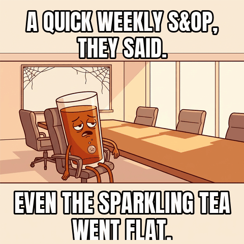

01Square · 113 KB · 22.6 s
Meme Desk
An original 2-beat meme: setup on top, punchline drops in. Classic meme grammar, new art every time.
Email line it wrote
Happy to circle back in Q2, Dana. Meanwhile, here's a tribute to the three-hour S&OP meeting.